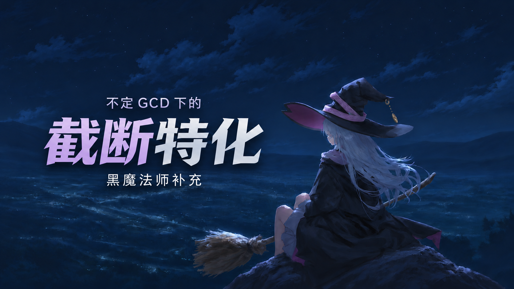

开始阅读基准循环的截断
完整一轮：13 GCD
按完整GCD计时 ／ 计入技能均命中
目标不可选中
已打出的4格后续技能来不及兑现
截断循环的亏损曲线
Q = ÷ 13 ≈
每格平均威力累计盈亏 = 已打出的威力 − 已完成GCD数 × Q
魔泉启动火段：9G累计
魔泉0 GCD
火4×6 → 火悖论 → 耀星 → 绝望
G／威力 · ΔGCD = 9−13 = · ΔP ≈
省去冰3 → 冰4 → 冰悖论 → AF1火3：−1536 + 4Q ≈
基准循环与截断特化
基准循环按原顺序打到第8格
截断特化B4 → U → 3 → 火4×3 → 核 → 耀
截断线
截断特化
| 体系 | 核心G | 本段总G | 核心序列 | 进火MP要求 | 核心威力 | ΔP |
|---|
U＝冰悖论 · 3＝AF1火苗火3 · D＝AF3绝望630 · 核＝核爆 · 耀＝耀星
无火苗3的双核：首核AF1、次核AF3。m＝异言次数，t＝雷次数（0或1）。
1—5G截断特化
6—11G截断特化
12—13G截断特化
UI3冰4回满蓝 · 13G以末尾冰悖论替代火悖论，同为540威力
截断特化的收益对比
截断基准
截断方案
雷的逐G伤害期望
高闪雷直伤 + 持续跳伤
150 直伤持续跳伤
目标当前无雷 ／ 2.45s复唱 ／ 无黑魔纹 ／ 相同加成
雷对比基线的盈亏GCD阈值
总共 7 GCD
17.15秒后死亡雷的期望威力
基线 Q
相对Q的盈亏
- 1 雷
- 2
- 3
- 4
- 5
- 6
- 7
总共 8 GCD
19.60秒后死亡雷的期望威力
基线 Q
相对Q的盈亏
- 1 雷
- 2
- 3
- 4
- 5
- 6
- 7
- 8
当前打雷这一格，已经计入总GCD数。
截断雷的盈亏
补雷：1雷 + 3异言 + 8G B4特化 = 12G
不补雷：3异言 + 9G B4特化 = 12G
共同起点：星灵移位进冰 · 两组均12G（29.40s），咏速787 · 双方进火≥3200MP · 补雷少打末尾U（540威力）